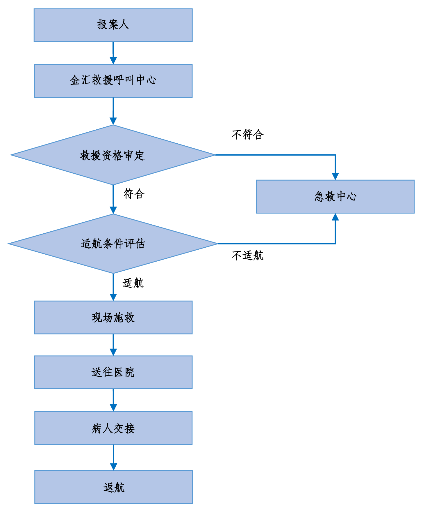

一、关于我们
上海金汇通用航空股份有限公司成立于2006年，是经中国民用航空局批准成立的甲类通航公司。凭借多年来卓越的运营和安全记录，已成为中国通航企业的杰出代表。金汇通航可为客户提供直升机医疗救援、直升机销售、维修保养、代管、租赁以及直升机私/商照培训等全方位服务。2015年，公司核心业务聚焦于直升机医疗救护事业。 2017年4月，公司正式挂牌新三板，证券代码871099。
目前，金汇通航正朝着“全国直升机医疗救援专家”的目标稳步迈进。公司将分三个阶段累计投入约150架专业医疗构型直升机，建成一个覆盖全国的空中医疗救援网络。为使航空救援服务普惠大众，金汇通航向市场推出“院前急救”、“医疗转运”等多种服务类型的直升机医疗救援会员产品，同时还与中国人保等大型保险公司建立合作，研发多种“直升机救援费用补偿”保险产品，市场反馈良好。
二、金汇救援项目背景
我国是一个幅员辽阔、人口众多的发展中大国，频发的自然灾害、各类事故灾难已成为影响我国经济发展和社会稳定的重大制约因素。2008年汶川地震之后，航空应急救援体系建设的呼声再次高涨。2015年，金汇通航启动HEMS直升机紧急医疗救援项目（Helicopter
Emergency Medical Service），简称“金汇救援”，以专业医疗构型直升机为运输载体，通过与全国院前急救单位及医院的合作，构建一个立体化直升机航空医疗救援网络，为社会公众提供及时响应的、常态化的院前救援和院间转运服务。
出众的直升机运营实力、丰富的航空和医疗救护行业人才储备、强大的医疗合作网络……对这些优势资源的有机整合与重新锻造，正是金汇通航的核心竞争力，也是我们全力以赴做好航空医疗救援事业的信心之源。
三、医疗保障
直升机空中救援项目将联合以120急救中心为主的各省市的院前救援单位及各地的医院，建设空地联合的紧急救援网络，为社会大众提供最全面和最及时的生命救助服务。
（1）急救中心（120）：与急救中心合作，共同搭建地空联动的立体化救援网络，为社会大众提供全面的生命救助服务。
（2）医院网络：与医院合作，院方特设24小时绿色通道，确保被救人员能够得到及时、适当的医疗救护和治疗。
金汇通航还将联合其它社会医疗资源，构建一个完善的空地一体的合作医疗网络。由于我们的服务范围还在不断建设和扩展中，最新服务范围请查阅我公司微信公众号“金汇空中救援”。
四、服务对象
金汇通航为在目前已部署救援直升机的省市范围内的用户提供救援保障服务，包括该范围内中国公民（含港澳台地区居民）或在中国持合法证件的外籍人士。（超出目前布机范围的，我公司不承诺提供服务，具体布机范围可通过金汇通航官方网站、金汇通航官方微信公众号或空降联盟官方微信公众号查询。）
五、服务热线
请谨记我们的救援电话： 4009-120-999，咨询、投诉与建议可拨打客户服务热线400-021-6619。
六、权益资格有效期
购买次日零时正式生效，有效期为生效之日起一年。
七、权益说明
成为我们本服务手册空降权益人后，您可获得以下权益：
直升机运输服务费标准：
AW119直升机（或其他单发机型）：4万元/小时
AW139直升机（或其他双发机型）：7万元/小时
注：飞行小时数是指直升机实际飞行时间，自旋翼转动起至旋翼停止转动止。起步计费1小时，超出部分以0.5小时为单位计费。
计费说明：
1、院前救援服务计费规则：服务期间，飞行任务结束后，由权益人或其亲属在《金汇通航直升机空中救援服务确认单》上签字，对服务小时数和服务费用进行确认。如因特殊原因权益人无法签字或权益人及其亲属没有签字，则服务时间以金汇通航实际飞行记录为准。权益人需在飞行任务结束后10个工作日内支付相应服务费用，否则金汇通航始终保留追讨的权利。
2、医疗转运服务计费规则：服务开始前，由权益人或其家属与金汇通航签署《直升机医疗转运服务合同》，由权益人或其家属对服务小时数和服务费用进行确认，并完成服务费用支付（具体以《直升机医疗转运服务合同》约定为准）。
八、服务内容及标准
*目前我公司提供的直升机救援服务为适航条件下的昼间救援服务。
*院前救援：指对遭受各种危及生命的急症、创伤、中毒、灾难事故等病人在到达医院之前进行的紧急救护，包括现场紧急处理和监护转运至医院的过程。
*院间患者转运：因限于医院技术和设备条件，对不能诊治的病人，根据病情需要而进行的上下级医院间、专科医院间或综合医院与专科医院间的转院诊治过程。
九、直升机航空医疗救援服务流程
您在需要帮助的时候可拨打金汇救援服务电话( 4009-120-999)寻求帮助。

十、院前救援适应症
十一、医疗转运适应症
十一、除外责任及限制责任
（一）除外责任
在下列情况下，金汇通航将无法提供服务且不承担任何责任：
1、 服务实施过程中，任何因为被救援人及其家属不服从机组人员及医务人员安排所造成的任何后果；
2、无法控制的事件，包括但不限于罢工、禁运、飞行状况、当地政策、法律法规所造成服务的延误或无法实施，以及其他不被允许提供救援服务的情况；
3、因不适航因素（包括但不限于天气情况、空中管制、法律法规等）造成救援服务无法实施或延误实施而导致的后果；
4、因权益人所提供的信息有误，导致我公司无法核实身份或及时制定救援计划的情况；
5、战争、侵略、军事行动、恐怖主义活动、内战、暴动、革命、起义、军事政变、武装夺取政权、暴乱、武装叛乱或邪教组织活动；
6、任何生物、化学、原子武器，原子装置造成的爆炸、辐射、灼伤或污染；
7、 权益人吸食或注射毒品；
8、 权益人因违法行为或被拘捕而产生的后果；
9、服务过程中，因被救援人病情恶化等客观原因产生的损害；
10、 因医院医疗救治过错或过失导致被救援人伤情变重、死亡的。金汇通航仅对飞行及运输安全负责；
11、其他法律法规规定的免责事由。
（二）限制责任
在下列情况下，金汇通航将不提供服务折扣或优惠价格，且在权益人愿意承担全部费用的前提下，金汇通航仍有主动权选择是否为权益人提供救援服务：
1、权益人忽视媒体预期发生的罢工、动乱或骚乱而发生的后果；
2、权益人故意自残、精神错乱、自杀或试图自杀导致的后果；
3、权益人因酗酒、斗殴，或受酒精、管制药品的影响而产生的后果；
4、权益人因精神和行为障碍导致的伤害；
5、权益人酒后驾驶、无合法有效驾驶证驾驶，或驾驶无有效行驶证的机动车而发生的后果。